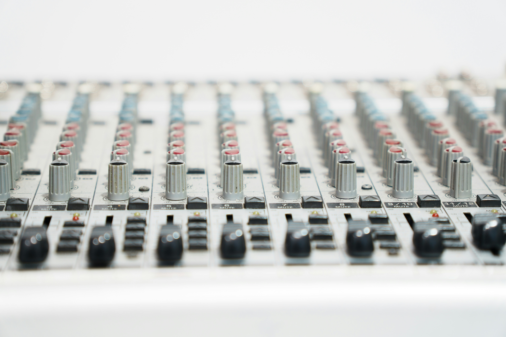

Equalizer - w skrócie EQ - to jedno z najważniejszych narzędzi w zestawie każdego realizatora dźwięku. Znajdziesz go w każdym DAW-ie, w każdym sprzętowym miksie i w każdym profesjonalnym studiu nagraniowym. Wiele osób zaczyna od niego swoją naukę miksu, a wiele innych spędza na jego opanowaniu lata. Ale czym właściwie jest EQ i dlaczego jest tak istotny?
Najprostsza analogia: EQ działa jak korektor dźwięku w samochodowym radiu - pokrętła bass, mid i treble, które wzmacniają lub tłumią poszczególne zakresy częstotliwości. W profesjonalnym EQ masz do dyspozycji znacznie więcej pasm i znacznie większą precyzję, ale zasada pozostaje ta sama: koregujesz to, jak dany dźwięk rozkłada się w spektrum częstotliwości.
Jak działa equalizer - pasma częstotliwości
Każdy dźwięk, który słyszysz - wokal, gitara, bębny, bas - to mieszanina fal o różnych częstotliwościach. Człowiek słyszy w zakresie od około 20 Hz do 20 000 Hz (20 kHz). EQ pozwala wybierać dowolny punkt w tym zakresie i wzmacniać go lub tłumić - podnosząc albo obniżając jego głośność o pewną liczbę decybeli (dB).
Podział pasma na zakresy
W praktyce pasmo słyszalne dzieli się na kilka głównych obszarów:
- Sub-bas (20-80 Hz) - to, co czujesz bardziej niż słyszysz. Potężna niska podstawa kopnięcia stopy, głęboki ruch basu. Zbyt wiele sub-basu czyni miks błotnistym.
- Bas (80-250 Hz) - grubość i ciepło brzmienia. Bas gitarowy, bęben basowy, dolna część wokalu. Kluczowy zakres dla energii i pełności miksu.
- Środek niski (250 Hz-2 kHz) - tu łatwo o zamuloność i pudełkowe brzmienie. Ważny zakres dla czytelności instrumentów.
- Środek wysoki (2-6 kHz) - obecność i atak. Wyrazistość wokalu, chrzęst gitary, klik stopy. Zbyt dużo powoduje zmęczenie słuchu.
- Góra (6-20 kHz) - powietrze i jasność. Brylanty i detale. Zbyt wiele szumów i sybilantów; zbyt mało - miks brzmi przytłumiony.
Rodzaje equalizerów
EQ nie jest jednym narzędziem - to rodzina narzędzi, z których każde ma nieco inną charakterystykę i zastosowanie.
EQ parametryczny
Najpopularniejszy typ w produkcji muzycznej. Dla każdego pasma ustawiasz trzy parametry: częstotliwość środkową (gdzie działasz), wzmocnienie (ile dB podnosisz lub tłumisz) i Q (szerokość pasma) - czy działasz precyzyjnie w wąskim oknie, czy szeroko na całym zakresie. Daje maksymalną elastyczność.
EQ graficzny
Znany z samochodowych wzmacniaczy i domowych wież - rząd suwaków, każdy dla ustalonej częstotliwości. Intuicyjny, ale mniej precyzyjny. Stosowany często w systemach PA (nagłośnienie koncertowe) i do szybkich korekt odsłuchu.
Shelving EQ
Działa jak półka (ang. shelf) - od danej częstotliwości wzwyż lub w dół modyfikuje cały zakres o tę samą wartość dB. High shelf otwiera lub zamyka górę brzmienia, low shelf dodaje lub zabiera bas. Proste i skuteczne do ogólnego kształtowania barwy.
High-pass i low-pass filter
Filtry przepuszczające - HPF (high-pass filter) przepuszcza wysokie częstotliwości i tnie niskie, LPF robi odwrotnie. Kluczowe narzędzie przy porządkowaniu miksu. O HPF więcej za chwilę.

Do czego używa się EQ w miksie
EQ to nie tylko „poprawianie dźwięku" - to precyzyjne narzędzie do kilku różnych zadań w procesie miksowania.
Usuwanie częstotliwości problemowych
Każde nagranie niesie ze sobą niechciane elementy: rezonanse pomieszczenia, dudnienie mikrofonu, nadmiarowy bas. EQ pozwala zlokalizować te częstotliwości i wąskim, głębokim cięciem je wyeliminować lub zmniejszyć. Technika poszukiwania problemów to sweeping: podnosisz wzmocnienie o +12 dB i wolno przesuwasz częstotliwość aż usłyszysz brzydki rezonans, a następnie go tłumisz.
Tworzenie miejsca dla instrumentów
Każdy instrument zajmuje pewien obszar w spektrum. Gdy kilka instrumentów rywalizuje w tym samym zakresie, miks staje się błotnisty. EQ pozwala wyciąć małe zakresy z jednego instrumentu, żeby zrobiło się miejsce dla drugiego. Klasyczny przykład: wycięcie niskich środków z gitary, żeby wokal miał przestrzeń.
Kształtowanie barwy
EQ służy też do aktywnego kształtowania charakteru dźwięku - dodania blasku wokalu lekkim shelving podbiciem górki, wydobycia ataku perkusji przez podbicie środka lub ocieplenia brzmienia przez lekki low shelf. To artystyczna strona equalizowania.
High-pass filter - najważniejsza funkcja dla początkujących
Jeśli chcesz zacząć od jednej funkcji EQ, niech to będzie high-pass filter (HPF), zwany też low-cut. Filtr ten odcina wszystkie częstotliwości poniżej wybranego punktu i przepuszcza tylko to, co jest wyżej.
Dlaczego jest tak ważny? Bo zdecydowana większość instrumentów nie potrzebuje basowych częstotliwości. Wokal, gitara elektryczna, klawisze, talerze perkusji - wszystkie produkują energię w niskich częstotliwościach, której nie słychać, ale która zajmuje przestrzeń w miksie, dodaje błoto i sprawia, że bas i stopa tracą czytelność.
Praktyczna zasada: ustaw HPF na prawie każdej ścieżce, z wyjątkiem basu i stopy. Wokal - HPF około 80-100 Hz. Gitara elektryczna - 100 Hz. Klawisze - zależy od roli, ale zaczynaj od 80 Hz. To jeden zabieg, który natychmiast czyści miks.
Złota zasada: najpierw tnie EQ, dopiero potem dodaje. Cięcie problemów jest ważniejsze niż podbijanie. Miks zbudowany na cięciach HPF i wąskich tłumieniach brzmi zawsze czyściej niż miks pełen szerokich podbić.

Typowe błędy przy używaniu EQ
- Podbijanie zamiast cięcia - podnosisz głośność zamiast usunąć problem. Efekt: coraz głośniejszy, ale nie czystszy miks.
- Zbyt szerokie pasma - szerokie podbicia zmieniają charakter całego brzmienia. Używaj wąskiego Q do cięć, szerszego do kształtowania barwy.
- Equalizowanie przez głośniki bez odsłuchu na słuchawkach - głośniki koloryzują dźwięk. Zawsze sprawdzaj wyniki EQ w słuchawkach.
- Porównywanie bez A/B - mózg uznaje głośniejsze za lepsze. Przy ocenie EQ zawsze porównuj przy tym samym poziomie głośności (bypass vs. włączony EQ).
- Equalizowanie na początku łańcucha efektów - zanim użyjesz EQ, posłuchaj surowego dźwięku. EQ przed kompresorem i EQ po kompresorze dają różne efekty.
EQ a mastering - różnice w podejściu
W miksie EQ stosujesz na poszczególnych ścieżkach, precyzyjnie i często agresywnie. W masteringu masz do czynienia ze stereo sumą całego miksu - każda ingerencja wpływa na wszystkie instrumenty jednocześnie. Dlatego w masteringu EQ używa się znacznie subtelniej: korekty rzędu ±1-2 dB, bardzo szerokie pasma, minimalna interwencja.
Różnicę między miksem a masteringiem i to, czemu służy każdy z etapów, wyjaśniamy szczegółowo w artykule mix a mastering - różnice krok po kroku.
Naturalnym kolejnym krokiem po EQ jest nauka kompresji - narzędzia kontrolującego dynamikę sygnału. Wszystko o tym, jak działa kompresor i kiedy go używać, znajdziesz w artykule kompresja w muzyce.
Jeśli chcesz sprawdzić, czy Twój miks brzmi dobrze nie tylko w słuchawkach, ale też na głośniku telefonu - EQ to kluczowe narzędzie w tym procesie. Dowiedz się, jak testować i poprawiać miks na różnych systemach: dlaczego mix brzmi inaczej na głośnikach.